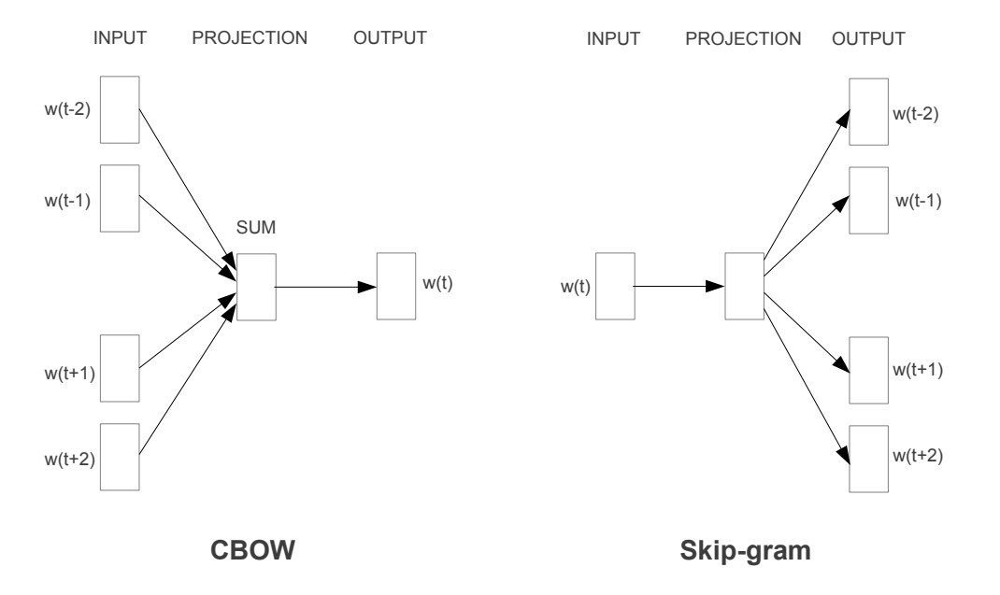

一、演算法核心理解
1. 這個演算法是什麼？
簡單來說，Word2Vec 就是一個「把文字翻譯成數字向量」的演算法。
- 給文字座標： 電腦看不懂中文字或英文單字，Word2Vec 的目的就是幫字彙庫裡的每一個詞，在一個高維度的空間裡找到一個專屬的「座標位置」（這個座標就是一串數字，也就是「詞向量」）。
- 把含意量化： 它最厲害的地方在於，這個座標不是亂給的，而是能把字詞的語意和語法關係給量化。當兩個詞的意思越接近，它們在空間裡的距離就會越近。
2. 它主要解決什麼問題？
在 Word2Vec 出現之前，傳統的自然語言處理（NLP）技術遇到了兩個大痛點：
- 傳統方法缺乏語意連結： 以前的系統把單字當作獨立的個體（像是給每個字一個獨立的 ID 索引）。在電腦眼裡，「貓」和「狗」只是兩個不同的數字，電腦完全不知道這兩個詞其實都是「寵物/動物」，彼此毫無關聯。
- 計算量爆炸： 以前的複雜神經網路模型，雖然想解決語意問題，但在處理有幾百萬詞彙的大數據時，計算速度慢到往往要訓練好幾個禮拜。
Word2Vec 的解法： 它移成了複雜的非線性隱藏層，大幅簡化模型結構，讓電腦能用不到一天的速度處理好幾十億字的超龐大語料庫，還成功讓電腦學會了單字之間的關聯性。
3. 它的基本運作流程是什麼？
Word2Vec 的核心邏輯建立在一個觀念上：「物以類聚，字以群分」——常在前後左右一起出現的字，意思一定很像。它的運作流程可以拆解為以下五個步驟：
- 步驟一：準備大量文本並建立字典
- 先餵給電腦大量的文章（例如論文中用的 Google News 新聞文本），電腦會統計並限制字典規模（例如只挑出最常出現的 100 萬個詞）。
- 步驟二：設定滑動視窗（Context Window）
- 拿著一個特定大小的「鏡頭」（視窗），在文章中一字一字滑動。例如設定視窗大小為 5，代表當焦點在某個「核心詞」時，它前後各 2 個字就是它的「上下文背景詞」。
- 步驟三：選擇訓練模式
-
Word2Vec 提供兩種互補的方法來猜字：
架構名稱 核心機制 (如何運作) 優缺點與適用場景 CBOW
(連續袋字模型)叫電腦看著「上下文背景詞」，去預測中間的「核心詞」是什麼。 訓練速度較快。在處理高頻率出現的字詞時，準確度較高，適合資料量較小的場景。 Skip-gram 剛好相反，拿中間的「核心詞」當線索，去預測它前後左右會出現哪些背景詞。 訓練速度較慢。但在處理「罕見詞」或大型語料庫時，能夠捕捉到更好的語意關聯性。 
圖 1：CBOW（左）與 Skip-gram（右）預測機制的運作方向對比示意圖 - 步驟四：透過錯誤中學習，優化向量座標
- 剛開始電腦一定是瞎猜的，此時利用Backpropagation和Adagrad等技術去修正錯誤。猜錯了就調整座標，猜對了就加強記憶。
- 步驟五：產出詞向量
- 當幾十億個字全部輪流猜完後，每個詞的「數字向量」就固定下來了。這時會出現一個神奇現象——向量加減法。
 圖 2：高維詞向量空間在二維投影下的幾何規律
圖 2：高維詞向量空間在二維投影下的幾何規律
電腦竟然能單靠數學計算，自己理解「國王之於男人，等於女王之於女人」的性別邏輯。
二、AI 輔助學習紀錄
在製作這次期末專期的過程中，我利用Gemini執行以下動作協助我理解Word2Vec：
- 1、先請 AI 帶我導讀論文： 快速建立對論文結構與核心貢獻的宏觀認知。
- 2、配合 AI 翻譯軟體自己讀論文全文： 確保不遺漏技術細節，同時訓練自己閱讀學術文獻的能力。
- 3、請 AI 幫我統整： 將繁複的論文內容淬煉成精簡的重點摘要，在和我自己統整的做比對融合。
- 4、與 AI 深度互動： 針對特定核心概念進行提問與反覆辯證。
三、查證與修正（以 Word2Vec 一詞多義為例）
1. 選擇查證的重點
本報告選擇針對 AI 導讀中提到的「Word2Vec 無法解決一詞多義（Polysemy）的缺點」進行深入查證。探討當同一個單字（如 Apple）同時代表「水果」與「科技公司」時，Word2Vec 的數學空間會如何處理，以及現代 AI 如何修正此問題。
2. 資料來源
- Word2Vec論文：Mikolov et al. (2013) Efficient Estimation of Word Representations in Vector Space 論文連結
- 其他文獻：Devlin et al. (2018) BERT: Pre-training of Deep Bidirectional Transformers for Language Understanding 論文連結
- 與 AI 工具之反覆質詢、推導互動紀錄。ai連結
3. 查證說明
經過與 AI 的進一步互動與文獻查證，確認了 Word2Vec 屬於「靜態詞向量（Static Word Embedding）」。
當模型在幾十億字的語料庫中訓練時，不論 "Apple" 在句子中是指水果還是公司，它在模型字典裡都只佔據一個唯一的 ID。在反向傳播更新權重時，這個唯一 ID 只能被分配到同一個固定的空間座標。
數值特徵查證結果如下：
- 語意偏向： 這個唯一的固定向量並不會完美切分語意，而是會「偏向在文本中出現頻率較高的語意」。如果新聞中科技公司的「蘋果」出現 80%，水果的「蘋果」只出現 20%，該向量座標會強烈往科技領域靠攏。
- 語意模糊： 這種機制會導致語意在數學空間中被「強制平均」，使一詞多義的單字在空間中的定位變得模糊，無法精準拆解。
4. 修正前後比較與原本理解之修正
這次的查證讓我明白，沒有一個演算法是完美的。Word2Vec 雖然大膽砍掉非線性隱藏層、換取了極致的運算速度，但這種「用速度換取結構簡化」的策略，也註定了它無法處理一詞多義的局限性。這讓我深刻體會到演算法設計中「Trade-off」的權衡。
四、實際應用案例說明
Word2Vec 算出來的「詞向量」是很多現代 AI 應用的基礎地基（Building Block），除了傳統的搜尋，它在許多實際情境中都有關鍵應用：
1. 搜尋引擎與資訊檢索
當你搜「平價手機」時，系統能自動聯想到「便宜」、「高性價比」、「Android 預算機」，因為這些詞在向量空間中靠得很近，從而找出更符合用戶心思的網頁。
2. 機器翻譯
它可以把不同語言對應到相近的向量空間。例如英文的 "Dog" 和中文的 "狗"，在各自語言訓練出來的空間裡會有相似的幾何位置
3. 推薦系統與關聯分析
這套演算法後來被延伸應用在電商推薦（如 Item2Vec）。例如論文中提到可以用來找出「哪些東西是不合群的」（選出非同類單字）。在實務上，可以透過分析用戶的購物車清單，算出平均向量，進而推薦其他最相近的商品。
4. 輿情分析與情感偵測
辨識文章或社群評論是「正評」還是「負評。因為正面詞（如：讚、厲害）和負面詞（如：爛、差勁）會各自聚集在不同的向量區域。
五、持續學習與個人反思
1. AI 對學習的幫助
AI 扮演了極佳的「24小時隨身助教」，它极大高縮短了我查找與篩選資料的時間。透過將生硬的數學公式轉化為直觀的比喻（如座位表），它幫助我跨越了學習初期的認知門檻，並能在遇到瓶頸時提供即時的技術推導與補充。
2. AI 回答的限制
在這次進階互動中，我深刻體會到「AI 存在幻覺與資訊簡化的局限性」。例如它會習慣性將所有文字類模型歸類為深度學習，或忽略靜態向量在處理「一詞多義」時的硬傷。若一味盲從 AI 的回答，就會陷入不夠精確的學術盲點中。
3. 真正學到了什麼
這次的專題讓我真正學到了「帶著批判性思維去求證」的科學精神。我不僅弄懂了 Word2Vec 兩種架構的運作數學原理，更在查證一詞多義限制的過程中，向後延伸認識了 BERT 的自注意力機制，理清了整個 NLP 技術演進的脈絡。這種「發現問題、查證對比、修正認知」的過程，才是最珍貴的收穫。